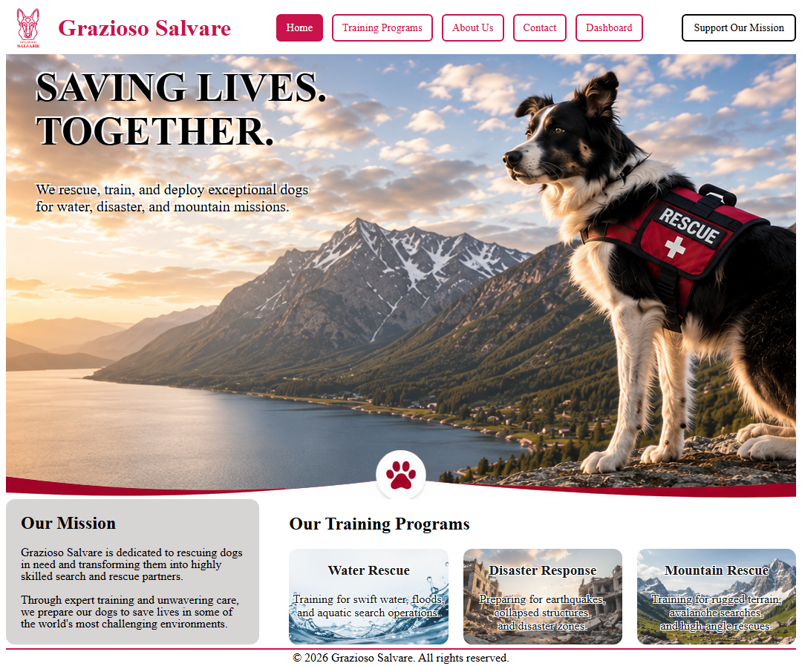
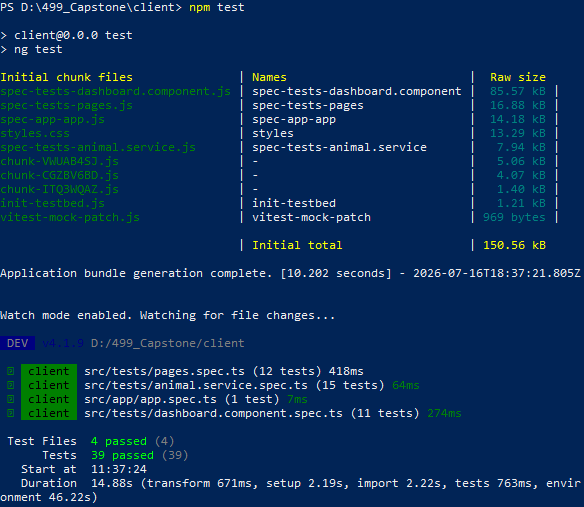

Software Design & Engineering Enhancement
The software design and engineering enhancement focused on transforming the original CS-340 dashboard application into a modern full-stack web application using the MEAN stack.
The original artifact provided useful functionality but had limitations in architecture, maintainability, security, and scalability. The enhancement addressed these limitations by introducing a separated frontend and backend architecture with improved software engineering practices.
Original Implementation
The original application was developed using Python, Dash, and MongoDB. It provided an interactive dashboard for viewing and filtering animal rescue records.
Although functional, the application combined user interface logic, data processing, and database interaction within a single environment. This design made future expansion and maintenance more difficult.
- Limited separation of application responsibilities
- No user authentication system
- No authorization controls
- Limited automated testing
- Minimal API structure
Implemented Enhancements
The application was redesigned using a modern full-stack architecture:
Angular Frontend
Created a structured single-page application with reusable components, services, routing, and improved user interaction.
Express REST API
Developed backend services using Node.js and Express to separate business logic from the user interface.
Authentication & Security
Implemented JWT authentication, role-based authorization, route guards, and protected administrative functionality.
Skills Demonstrated
- Full-stack application development
- REST API design
- Angular component architecture
- Authentication and authorization design
- Software testing methodologies
- Application maintainability improvements

Testing Improvements
Software quality was improved through automated testing practices.
- Backend API testing using Jest and Supertest
- Frontend component testing using Vitest
- Validation testing for application inputs
- Error handling verification
- Authentication and authorization testing for protected routes
- CRUD operation testing for animal and training records
- Database integration testing with MongoDB collections

Course Outcome Alignment
This enhancement demonstrates growth in software engineering by applying professional development practices, improving software architecture, and creating a maintainable full-stack application.
The project demonstrates my ability to analyze an existing software system, identify limitations, and implement engineering solutions that improve functionality, security, and scalability.
Supporting Evidence
The following documentation provides additional details about the software design and engineering enhancements implemented during the capstone project.